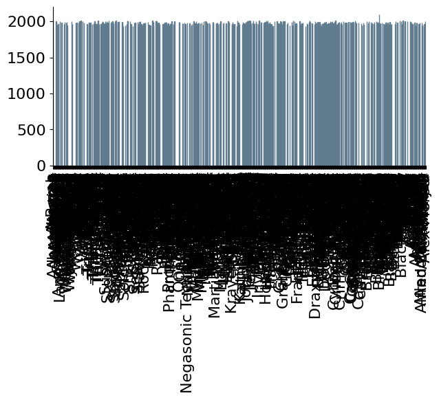
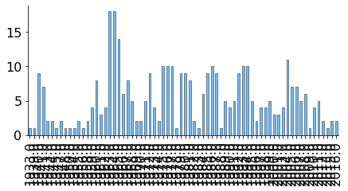
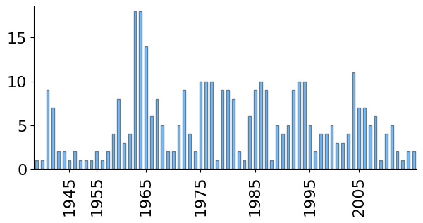
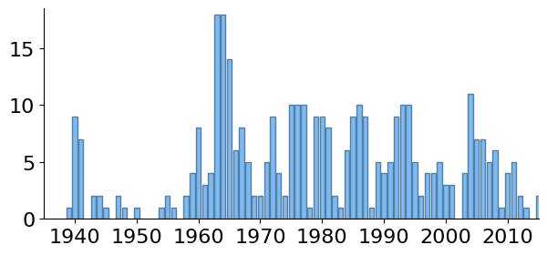

Serie
Contenuti
3.1. Serie¶
Una delle classi principali implementate in pandas è Series. Le sue istanze
rappresentano serie di osservazioni di un certo carattere fatto su un insieme
di individui. La cella seguente recupera dalla lista heroes precedentemente
creata i nomi dei supereoi e il loro anno di prima apparizione e li utilizza
per creare una serie:
import csv
import numpy as np
import matplotlib.pyplot as plt
import pandas as pd
plt.style.use('sds.mplstyle')
with open('data/heroes.csv', 'r') as heroes_file:
heroes_reader = csv.reader(heroes_file, delimiter=';', quotechar='"')
heroes = list(heroes_reader)[1:]
years = [int(h[7]) if h[7] else None for h in heroes]
names = [h[0] for h in heroes]
first_appearance = pd.Series(years, index = names)
Nella creazione della lista year è stata utilizzata una list comprehension in
cui l'espressione int(h[7]) if h[7] else None utilizza un operatore ternario
tramite cui la stringa vuota viene trasformata nel valore speciale None,
mentre tutte le altre vengono convertite nel corrispondente intero.
La differenza tra una serie e una lista o una tupla è legata alla possibilità di invocare su di essa delle funzioni specifiche. Inoltre a ogni serie è associato un indice che permette di identificare ogni elemento osservato. Nell'esempio sopra riportato, il primo argomento specificato nel costruttore è una lista (ma sarebbe andata bene anche una tupla) di anni che indicano la prima apparizione di un supereroe e il secondo rappresenta appunto l'indice, che in questo caso è la lista dei corrispondenti nomi. Quando si visualizza una serie, ogni osservazione viene associata al corrispondente elemento usando appunto l'indice:
first_appearance
A-Bomb 2008.0
Abraxas NaN
Abomination NaN
Adam Monroe NaN
Agent 13 NaN
...
Alan Scott 1940.0
Amazo 1960.0
Ant-Man 1962.0
Ajax 1998.0
Alex Mercer NaN
Length: 735, dtype: float64
La visualizzazione della serie (che in questo caso riporta solo i primi e gli
ultimi elementi perché la serie è troppo lunga) termina indicando il tipo di
dato usato per rappresentare le varie osservazioni. Nell'esempio precedente
viene utilizzato il tipo float64 (pandas utilizza internamente gli array di
numpy, in cui è presente un'implementazione dei tipi in virgola mobile diversa
da quella standard di python), nonostante i dati originari fossero numeri
interi. Ciò è dovuto alla presenza di valori mancanti. Di norma vengono
indicati con la sigla NA (dall'inglese "not available"), ma in pandas essi
vengono rappresentati utilizzando il concetto di "not a number" dello standard
IEEE per la virgola mobile: si noti come tutte le occorrenze di None nella
lista originale siano state automaticamente convertite in np.nan.
L'accesso ai dati contenuti in una serie può avvenire in due modi:
specificando un valore per l'indice tra parentesi quadre dopo la serie o dopo la sua proprietà
loc:
(first_appearance['Wonder Woman'], first_appearance.loc['Wonder Woman'])
(1941.0, 1941.0)
indicando un valore per la posizione tra parentesi quadre dopo la serie o dopo la sua proprietà
iloc:
(first_appearance[128], first_appearance.iloc[128])
(1992.0, 1992.0)
Nomenclatura
Se l'indice di una serie è basato su valori interi, i valori tra parentesi quadre immediatamente dopo la serie faranno riferimento all'indice e non alla posizione: ciò potrebbe essere fuorviante se gli elementi dell'indice non partono da zero e non sono consecutivi.
È inoltre possibile utilizzare una notazione simile al list slicing specificando valori dell'indice oppure posizioni. Va però notato che gli slicing basati su indice comprenderanno il primo e l'ultimo valore specificato:
first_appearance['Wonder Girl':'Wonder Woman']
Wonder Girl 1996.0
Wonder Woman 1941.0
dtype: float64
mentre gli slice basati su posizione escluderanno l'ultimo elemento:
first_appearance[60:63]
Vegeta NaN
Vixen 1981.0
Valkyrie NaN
dtype: float64
L'accesso posizionale può anche fare riferimento a numeri negativi, contando in analogia a liste e tuple a partire dall'ultimo elemento:
first_appearance[-5:]
Alan Scott 1940.0
Amazo 1960.0
Ant-Man 1962.0
Ajax 1998.0
Alex Mercer NaN
dtype: float64
È possibile accedere ai primi e ultimi elementi di una serie anche utilizzando
le funzioni head e tail, che mostrano rispettivamente solo le prime e le
ultime righe:
first_appearance.head(7)
A-Bomb 2008.0
Abraxas NaN
Abomination NaN
Adam Monroe NaN
Agent 13 NaN
Air-Walker NaN
Agent Bob 2007.0
dtype: float64
L'accesso alle liste può anche essere fatto specificando una lista (ma non una tupla) di posizioni al posto di una sola posizione, con l'effetto di ottenere i corrispondenti elementi.
first_appearance[[1, 42, 709]]
Abraxas NaN
Warbird NaN
Astro Boy NaN
dtype: float64
Questo tipo di accesso può essere fatto anche specificando una lista di valori
per l'indice. Infine, si può utilizzare una lista di valori booleani in cui
True indica gli elementi da estrarre e False quelli da filtrare:
first_appearance[[1970 <= y <1975 for y in first_appearance]]
Thundra 1972.0
Swamp Thing 1972.0
Shang-Chi 1973.0
Rambo 1972.0
Ra's Al Ghul 1971.0
Namorita 1972.0
Mockingbird 1971.0
Metron 1971.0
Man-Bat 1970.0
Man-Thing 1971.0
Luke Cage 1972.0
Jennifer Kale 1972.0
Iron Fist 1974.0
Ghost Rider 1972.0
Etrigan 1972.0
Drax the Destroyer 1973.0
Diamondback 1972.0
Doc Samson 1971.0
Darkseid 1970.0
Deathlok 1974.0
Brother Voodoo 1973.0
Blade 1973.0
dtype: float64
Nomenclatura
L'uso di questa modalità di accesso richiede che la lista di valori booleani abbia la stessa lunghezza della serie. L'uso di liste di dimensioni minori l'accesso, che comporta un filtraggio effettuato solo nei primi elementi della serie, è deprecato e va quindi evitato.
Infine, è possibile effettuare delle query su una serie specificando tra parentesi quadre un'espressione logica che indica quali elementi visualizzare, utilizzando la serie come simbolo che ne indica un suo generico elemento:
first_appearance[first_appearance > 2010]
Venompool 2011.0
The Cape 2011.0
Spider-Man 2011.0
Simon Baz 2012.0
Rey 2015.0
Kylo Ren 2015.0
Jyn Erso 2016.0
K-2SO 2016.0
Jessica Cruz 2013.0
Garbage Man 2011.0
Evil Deadpool 2011.0
Captain Cold 2012.0
Bloodhawk 2099.0
dtype: float64
Nomenclatura
Tecnicamente, l'espressione first_appearance > 2010 genera una nuova serie
che ha lo stesso indice di first_appearance e in cui i valori sono True in
corrispondenza degli anni successivi al 2010 e False altrimenti. Questa nuova
serie viene utilizzata per filtrare first_appearance.
Vediamo ora come utilizzando le serie sia molto più semplice calcolare e
visualizzare le frequenze assolute: il metodo value_counts restituisce
un'altra serie in cui gli indici sono i valori osservati e i valori le
corrispondenti frequenze assolute, ordinate in senso non crescente.
first_appearance.value_counts()
1964.0 18
1963.0 18
1965.0 14
2004.0 11
1975.0 10
..
2013.0 1
1983.0 1
1933.0 1
1948.0 1
1988.0 1
Length: 71, dtype: int64
Va notato come il tipo delle frequenze sia, correttamente, intero e come i
valori mancanti siano automaticamente esclusi dal calcolo delle frequenze,
mentre sono sempre presenti gli outlier. Per ottenere una serie i cui
elementi siano ordinati per valore non decrescente della voce nell'indice è
sufficiente invocare il metodo sort_index; già che ci siamo, è un buon
momento per eliminare i valori fuori scala dal conteggio effettuando una
query sulla serie:
first_app_freq = first_appearance[first_appearance < 2090].value_counts().sort_index()
first_app_freq.head(10)
1933.0 1
1939.0 1
1940.0 9
1941.0 7
1943.0 2
1944.0 2
1945.0 1
1947.0 2
1948.0 1
1950.0 1
dtype: int64
3.1.1. Visualizzione grafica di una serie¶
Pandas mette a disposizione l'oggetto plot per visualizzare graficamente i
contenuti di una serie, utilizzando matplotlib dietro le quinte; in
particolare, il metodo bar visualizza un grafico a barre:
# Don't try this at home (men che meno all'esame!)
first_appearance.plot.bar()
plt.show()

Il grafico ottenuto, diciamolo, fa schifo. Questo perché bar considera un
punto per ogni elemento della serie, in cui le ascisse corrispondono alla
posizione (zero per la prima osservazione, uno per la seconda e così via,
sebbene nel grafico sull'asse delle ascisse vengano poi visualizzati i valori
dell'indice) e le ordinate al valore osservato. Per ognuno dei punti così
ottenuti viene poi tracciato un segmento che lo congiunge perpendicolarmente
all'asse delle ascisse. Il risultato è decisamente poco informativo, sia da un
punto di vista grafico (le etichette sull'asse delle ascisse si sovrappongono,
così che non si riesce a leggere nulla), sia da un punto di vista analitico: le
barre hanno altezze simili e quindi le loro differenze sono poco apprezzabili a
colpo d'occhio; inoltre il grafico dipende per esempio dall'ordine in cui sono
elencate le osservazioni e non ci permette di solito di trarre alcuna
informazione sulla relazione che lega tra loro le osservazioni.
Si ottengono dei risultati decisamente più interessanti se si visualizza un grafico analogo per le frequenze assolute:
first_app_freq.plot.bar()
plt.show()

Il grafico ottenuto è sicuramente migliore di quello precedente, ma rimane il problema di leggibilità dell'asse delle ascisse. Ciò è dovuto al fatto che pandas non inserisce le barre sul grafico nelle ascisse corrispondenti agli anni, ma le posiziona una accanto all'altra, come possiamo renderci conto visualizzando un po' meglio solo alcune delle etichette (in prima istanza non è importante capire come venga generato questo grafico, ma se siete curiosi potete leggere l'approfondimento che trovate dopo il commento al grafico stesso):
years = np.arange(1945, 2010, 10)
index_pos = [first_app_freq.index.get_loc(y) for y in years]
first_app_freq.plot.bar()
plt.xticks(index_pos, years)
plt.ylim((0, 18.5))
plt.show()

Si può osservare che tra due valori successivi evidenziati nell'asse delle ascisse intercorre una distanza di dieci anni, ma le etichette non risultano equispaziate: ciò è dovuto al fatto che in realtà la prima barra ha ascissa 1, la seconda ha ascissa 2 e così via, mentre le etichette mostrate sull'asse delle ascisse corrispondono ai valori degli indici.
Nomenclatura
Per generare il grafico precedente è necessario utilizzare alcune funzionalità
avanzate delle librerie considerate: np.arange permette di costruire un array
i cui valori vanno di dieci in dieci partendo da 1945 e arrivando a 2005; la
proprietà index di una serie permette di estrarne l'indice e il metodo
get_loc di quest'ultimo restituisce la posizione corrispondente a un dato
valore dell'indice. Infine, il metodo xticks di matplotlib permette di
specificare quali valori evidenziare sull'asse delle ascisse e quali etichette
utilizzare.
Per ottenere un grafico simile in cui le ascisse siano effettivamente gli anni
di prima apparizione è necessario tornare a utilizzare esplicitamente
matplotlib, passando al metodo bar rispettivamente l'indice e i valori della
serie, che si ottengono rispettivamente utilizzando la proprietà index e
invocando il metodo get_values.
plt.bar(first_app_freq.index, first_app_freq.values)
plt.xlim((1935, 2015))
plt.ylim(0, 18.5)
plt.show()

3.1.2. Operazioni con le serie¶
Consideriamo le seguenti domande:
Quanti supereroi sono apparsi dopo il 1960?
Quanti tra il 1940 e il 1965?
Quanti dopo il 1970?
Per rispondere alla prima domanda dobbiamo isolare le frequenze che corrispondono agli anni di apparizione che vanno dal 1960 in avanti. Notiamo che l'indice della serie contiene i valori degli anni; è quindi possibile utilizzare l'accesso tramite list slicing per recuperare le frequenze degli anni di apparizione che vanno dal 1960 in avanti:
first_app_freq[1960:]
1960.0 8
1961.0 3
1962.0 4
1963.0 18
1964.0 18
1965.0 14
1966.0 6
1967.0 8
1968.0 5
1969.0 2
1970.0 2
1971.0 5
1972.0 9
1973.0 4
1974.0 2
1975.0 10
1976.0 10
1977.0 10
1978.0 1
1979.0 9
1980.0 9
1981.0 8
1982.0 2
1983.0 1
1984.0 6
1985.0 9
1986.0 10
1987.0 9
1988.0 1
1989.0 5
1990.0 4
1991.0 5
1992.0 9
1993.0 10
1994.0 10
1995.0 5
1996.0 2
1997.0 4
1998.0 4
1999.0 5
2000.0 3
2001.0 3
2003.0 4
2004.0 11
2005.0 7
2006.0 7
2007.0 5
2008.0 6
2009.0 1
2010.0 4
2011.0 5
2012.0 2
2013.0 1
2015.0 2
2016.0 2
dtype: int64
A questo punto è sufficiente invocare la funzione sum sulla sotto-serie
individuata per ottenere la somma delle frequenze:
sum(first_app_freq[1960:])
329
La seconda domanda trova risposta in modo analogo, filtrando le frequenze degli anni di apparizione tra il 1940 e il 1966:
sum(first_app_freq[1940:1966])
106
Analogamente, all'ultima domanda si risponde selezionando gli anni dal 1970 in avanti:
sum(first_app_freq[:1971])
130
Nomenclatura
La funzione sum accetta come argomento liste, tuple e serie: in tutti i casi
restituisce la somma dei valori in esse contenute.
Un modo alternativo per calcolare la somma dei valori in una serie è quella di
invocare su di essa l'omonimo metodo sum. Le serie sono inoltre in tutto e
per tutto dei vettori, sui quali è possibile effettuare operazioni algebriche.
Consideriamo per esempio le due serie contenenti altezza e peso dei supereroi:
height = pd.Series([float(h[4]) if h[4] else None for h in heroes], index=names)
weight = pd.Series([float(h[5]) if h[5] else None for h in heroes], index=names)
Una prima categoria di operazioni è quella che si ottiene indicando il nome di una serie all'interno di un'espressione aritmetica: il risultato è una nuova serie ottenuta calcolando l'espressione su tutti gli elementi della serie di partenza. Per esempio, la cella seguente crea la serie contenente l'altezza degli eroi misurata in metri e ne visualizza i primi dieci elementi:
(height/100)[:10]
A-Bomb 2.0321
Abraxas NaN
Abomination 2.0304
Adam Monroe NaN
Agent 13 1.7341
Air-Walker 1.8859
Agent Bob 1.7825
Abe Sapien 1.9124
Abin Sur 1.8552
Angela NaN
dtype: float64
Quando si considerano operazioni più complicate, è possibile utilizzare il
metodo apply indicando come suo argomento la funzione da applicare agli
elementi della serie. Per esempio, nella cella seguente viene creata una nuova
serie ottenuta esprimendo le altezze dei supereroi in metri e successivamente
elevando il risultato al quadrato.
height.apply(lambda h: (h/100)**2)[:10]
A-Bomb 4.129430
Abraxas NaN
Abomination 4.122524
Adam Monroe NaN
Agent 13 3.007103
Air-Walker 3.556619
Agent Bob 3.177306
Abe Sapien 3.657274
Abin Sur 3.441767
Angela NaN
dtype: float64
Un'altra importante categoria di operazioni è quella che vede due serie
indicate come argomenti di un operatore aritmetico binario. In questo caso
verrà ancora creata una nuova serie, in cui l'operazione viene calcolata
elemento per elemento nelle serie indicate. Per esempio, la cella seguente
crea una nuova serie bmi contenente l'indice di massa corporea (BMI) dei
supereroi (ottenuto dividendo il peso specificato in chilogrammi per il
quadrato dell'altezza misurata in metri), e mostra i quindici supereroi con
il BMI più elevato.
bmi = weight / height.apply(lambda h: (h/100)**2)
bmi.sort_values(ascending=False)[:15]
Utgard-Loki 2501.321629
Giganta 1607.124545
Red Hulk 137.611973
Darkseid 114.366701
Machine Man 114.083519
Thanos 109.414534
Destroyer 107.579152
Abomination 107.211015
A-Bomb 107.024446
Hulk 105.622909
Bloodaxe 104.160435
Juggernaut 103.216295
King Kong 102.732873
Sasquatch 96.810738
Living Brain 91.318046
dtype: float64
A parte notare Hulk è solo il quindicesimo della classifica, va sottolinato che le operazioni fatte elemento per elemento allineano i vettori corrispondenti alle serie in base all'indice (e non alla posizione). Consideriamo per esempio la seguente cella, in cui vengono selezionati altezze e pesi più o meno plausibili per un essere umano, calcolando poi i corrispondenti BMI.
standard_weight = weight[(weight < 100) & (weight > 40)]
standard_height = height[(height < 210) & (height > 120)]/100
(standard_weight / (standard_height**2))[:15]
A-Bomb NaN
Abe Sapien 17.868501
Abin Sur 26.410852
Abomination NaN
Absorbing Man NaN
Adam Strange 25.952943
Agent 13 20.295282
Agent Bob 25.634923
Agent Zero NaN
Air-Walker NaN
Ajax 24.245355
Alan Scott 27.725061
Alfred Pennyworth 22.966566
Ammo NaN
Angel 20.589542
dtype: float64
Si nota un numero relativamente elevato di NaN, e ciò è appunto dovuto al
fatto che il rapporto alla base del calcolo del BMI viene fatto usando peso e
altezza di valori che hanno lo stesso indice. Ora, non è detto che un supereroe
che ha un peso plausibile abbia anche un'altezza plausibile, e viceversa.
Quello che succede quando si esegue un'operazione tra due serie e solo una di
essa è definita in corrispondenza di uno specifico valore dell'indice, il
risultato conterrà NaN per quel valore.